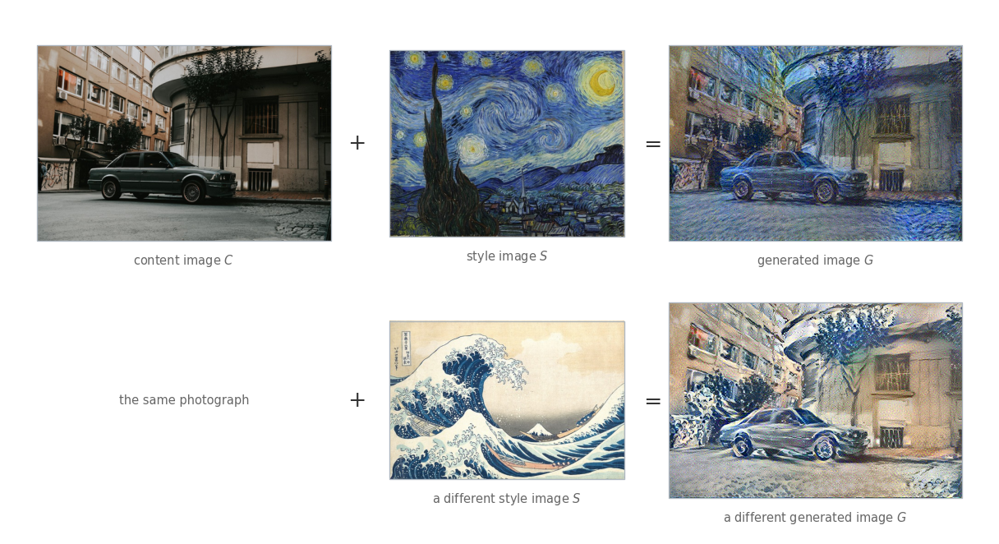
Neural Style Transfer
deep-learning
convolutional-neural-networks
computer-vision
neural-style-transfer
visualization
gram-matrix
cost-function
convolution
signals
Repainting a photograph in the style of an artwork, the two costs that make it work, and what convolution looks like over 1D and 3D data.
One of the most fun applications of ConvNets is neural style transfer. You take a photograph, you take an artwork, and you get back a new picture which is the photograph redrawn in the style of the artwork.
Three images are involved, and each gets a letter. \(C\) is the content image, the photograph whose contents you want to keep. \(S\) is the style image, the artwork whose look you want to borrow. \(G\) is the generated image, the one the algorithm produces.
The photograph is a street with a car parked in front of a building. The first artwork is Van Gogh’s The Starry Night and the second is Hokusai’s The Great Wave off Kanagawa. In both generated images the car is still a car and the building is still a building, so the content survived. What changed is everything about how it is painted, the palette, the brush strokes, the swirls in the first and the crested foam in the second.
Getting \(G\) is not a matter of running an image through a network and reading off the answer. There is no network here that takes a photograph and a painting and outputs a painted photograph. What happens instead is that \(G\) is built by gradient descent on its own pixels, and the thing being minimized is written in terms of the features a ConvNet extracts at various layers, both shallow and deep.
That makes the layers of a trained ConvNet the raw material of the whole method, so it is worth knowing what they contain before using them.
What Deep ConvNets Are Learning
Here is a way to see what a hidden unit is looking for.
Pick one hidden unit somewhere in the network. Scan through a large collection of images, pass each one through the network, and record how strongly that unit fires on each. Then take the images that fired it hardest and look at them.
There is one refinement. A hidden unit in an early layer sees only a small portion of the input image, the region called its receptive field, so plotting the whole image would be misleading. Plot just the patch the unit actually sees. Nine patches from nine different images give a fair picture of what one unit responds to, and nine units give a fair picture of a layer.
The technique is from Zeiler and Fergus (2014), whose paper also has more sophisticated ways of visualizing what a ConvNet is doing. What follows is that technique applied to VGG-19 with its ImageNet weights, the same network the images above were generated with, searching the 1102 photographs this site already hosts for its other pages.
The classifier head is dropped, so the network ends after the last convolutional block, and five layers are probed, the last convolution of each block. Those five are what the figures call layer 1 through layer 5.
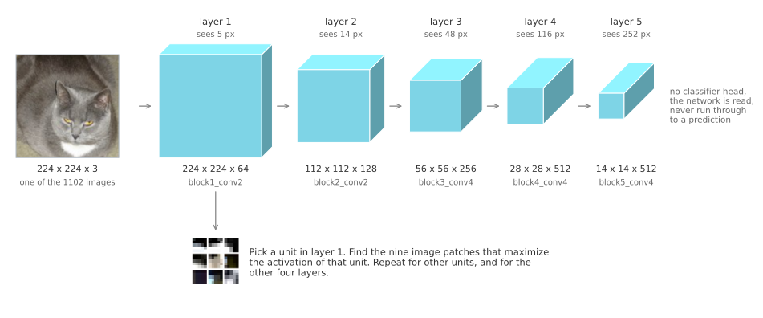
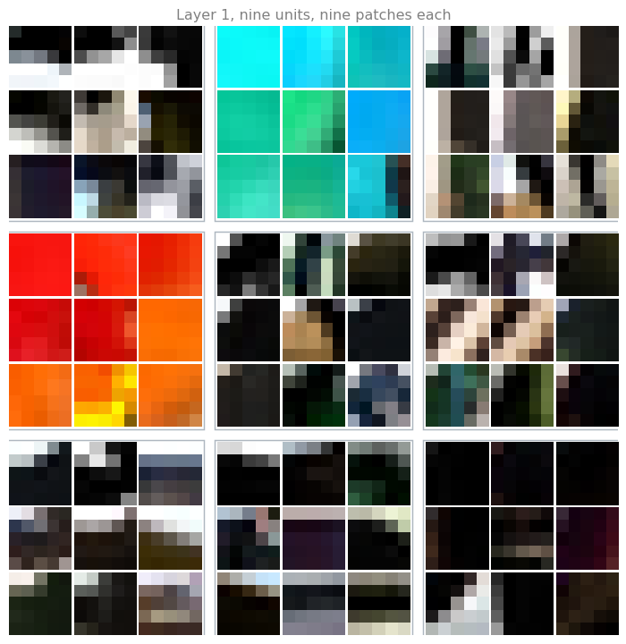
Units in the first layer are looking for relatively simple things. One of them fires on a particular shade of cyan, another on reds and oranges, and it does not much matter what object the color belongs to. Most of the others fire on an edge, meaning a step from light to dark, and each has its own preferred orientation. One wants the light above and the dark below, another wants a bright vertical strip, another a diagonal.
Now do the same for units further into the network.
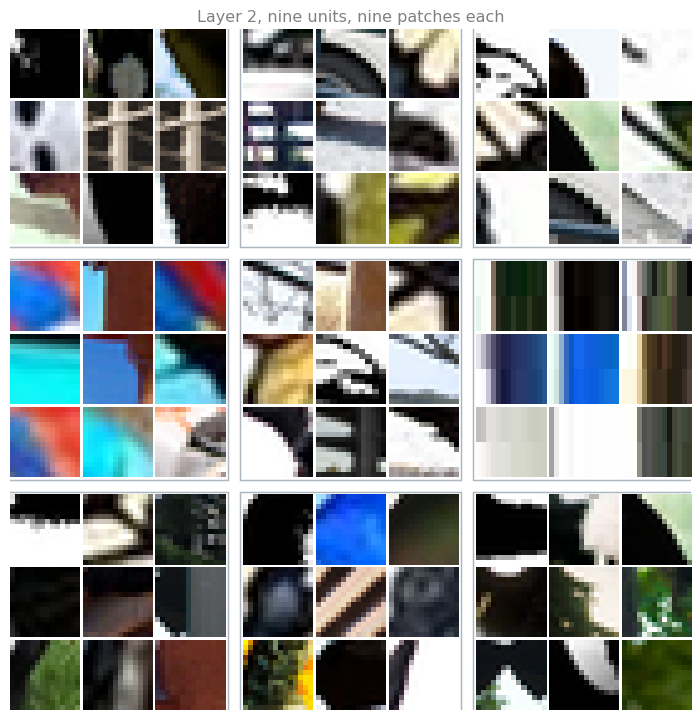
The second layer is detecting more complex shapes and patterns. A simple edge is no longer enough for these units. One responds to a corner, where a dark region meets a light one along two directions at once. Another responds to a bright vertical bar with dark on both sides of it. One wants the boundary between a blue region and a warm red one, so the colors matter as much as the arrangement. The patches are also bigger, 14 pixels rather than 5, because a unit two layers in sees more of the image than a unit one layer in.
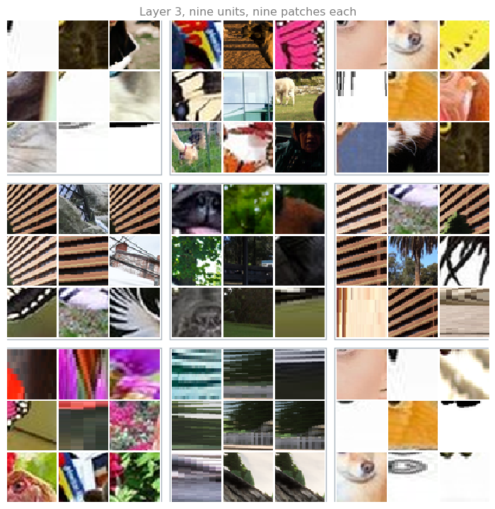
By the third layer the units have opinions about texture. One of them is clearly a repeating stripe detector, and it has found the same balcony railing on a building over and over, along with a zebra and a striped butterfly wing, which are the same pattern as far as it is concerned. Another has settled on fur. Another responds to pink and magenta flower heads. One is starting to look like an eye and muzzle detector, since most of its patches are the front of an animal’s face. These are more complex patterns than layer 2, and some of them are hard to name at all, which is normal.
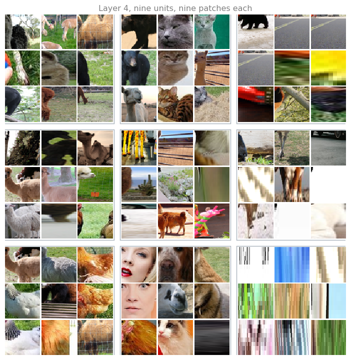
The fourth layer is detecting things you would give a name to. One unit has become close to a cat detector, and the cats it has found are different colors, different breeds, and photographed from different angles, which is a lot of variation for one unit to survive. Another fires on animals standing in a field. Another fires on thin vertical legs with ground behind them. One has settled on faces seen close up, mostly dogs and cats, with a couple of human ones among them.
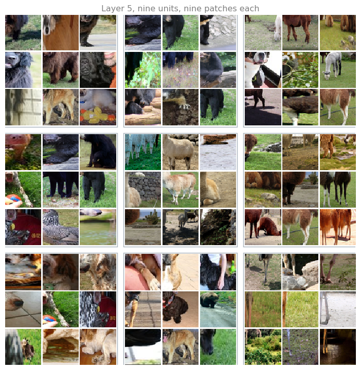
By the fifth layer the receptive field of a unit covers the entire input, so every patch is a complete photograph, and what these units respond to is the subject of the picture. One of them fires on large dark furry animals, black dogs and bears together. Another fires on pale animals standing in a field, sheep and alpacas alike. Another has found legs again, but now the legs of a whole standing animal rather than a crop of one.
So the network has gone a long way, from relatively simple things such as edges in layer 1, to textures in layer 2 and 3, to recognizable objects in the deeper layers. That is the progression worth carrying forward.
One honest caveat about these particular grids. The collection being searched is mostly pets, farm animals, and street scenes, because that is what the other pages on this site needed. A unit that has learned to detect boats cannot demonstrate it here, since there are no boats to find. What the deeper layers fire on is partly a fact about VGG-19 and partly a fact about which 1102 photographs it was shown.
Review Questions
1. Why are the layer 1 tiles plotted as tiny 5 pixel patches instead of as whole photographs?
TipAnswer
Because 5 pixels is all that unit sees. The receptive field of a unit in the first block spans 5 pixels of the input, so everything outside that square is invisible to it and could be replaced with anything at all without changing its activation. Showing the whole photograph would suggest the unit had responded to the scene, when in truth it responded to one small step from light to dark inside it.
1. The patches get larger layer by layer, from 5 pixels to the whole image. What causes that?
TipAnswer
Stacking. Each convolution lets a unit see a little more than the units feeding it, and each pooling layer doubles how far its window reaches into the original image. By the fifth block the receptive field is wider than the input itself, so at the extreme every pixel of the image can influence that unit. This is the same reason the deeper layers can respond to whole objects. An object simply does not fit inside a 5 pixel window.
1. One unit in the layer 3 figure responds to a striped railing, a zebra, and a striped butterfly wing, which are three completely different things. Is the unit confused?
TipAnswer
No, it is doing its job. A unit at that depth is a pattern detector, not an object detector, and a regular alternation of light and dark bars is the same pattern whether it belongs to architecture or an animal. Telling a zebra from a railing is work for later layers, which combine many such pattern detectors. Layer 3 is only reporting that the pattern is present.
1. True or false. You train a ConvNet on a dataset of cats, dogs, birds and other animals, then go looking for a filter that responds strongly to horizontal edges. You are more likely to find it in layer 6 of the network than in layer 1.
True
False
TipAnswer
b. An edge is about as low level as a feature gets, and the first layer is where low level features live. A unit there sees a handful of pixels and the most it can report is a single step from light to dark across them, so a bank of edge detectors at various orientations is close to the only thing the first layer can be made of. By layer 6 the receptive field covers much of the image and the units have moved on to textures, repeated patterns and parts of objects, which are built out of edges rather than being edges.
Nothing forbids a deep unit from correlating with horizontal structure somewhere in its response, but the dedicated horizontal edge detector is a layer 1 object. Note also that none of this depends on the pictures being animals. The progression from edges to textures to parts is what these visualizations show for any dataset.
Neural style transfer needs a way to say how much two images have in common, and it needs to say it separately for content and for style. The layers above are what make that possible. The deeper layers carry what is in a picture, which is what the word content should mean, and the shallower ones carry the strokes and textures, which is a large part of what style means.
To build such a system, define a cost function for the generated image. By minimizing that cost function, you can generate the image you want.
Cost Function
The cost function \(J(G)\) measures how good a particular generated image is, and it has two parts.
\[ J(G) = \alpha \, J_{\text{content}}(C, G) + \beta \, J_{\text{style}}(S, G) \]
The first part is the content cost. It is a function of the content image and of the generated image, and it measures how similar the contents of the generated image are to the contents of \(C\).
The second part is the style cost. It is a function of the style image and the generated image, and it measures how similar the style of \(G\) is to the style of \(S\).
The two are weighted by hyperparameters \(\alpha\) and \(\beta\), which specify the relative weighting between them. It does seem redundant to use two hyperparameters where one ratio would do, and one would indeed be enough, but the original authors of the algorithm used two, and the convention has stuck.
Gradient Descent on Pixels
Having defined \(J(G)\), here is how a new image actually gets generated.
Initialize \(G\) randomly. It might be 100 by 100 by 3, or 500 by 500 by 3, or whatever dimension you want it to be, and every pixel value is chosen at random, so the starting image is white noise.
Then use gradient descent to minimize \(J(G)\), updating
\[ G := G - \frac{\partial}{\partial G} J(G) \]
Read that update carefully, because it is not the one you are used to. There are no weights being learned here. The pretrained ConvNet is frozen, and what is being updated is the pixel values of the image \(G\) itself. Gradient descent is repainting the picture, one small correction at a time.
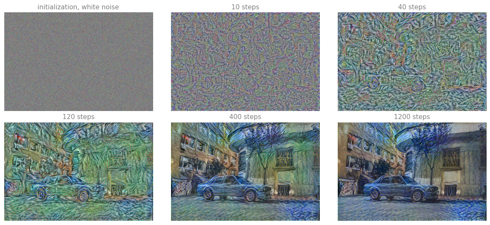
Slowly, as the pixel values change, you get an image that looks more and more like the content image rendered in the style of the style image.
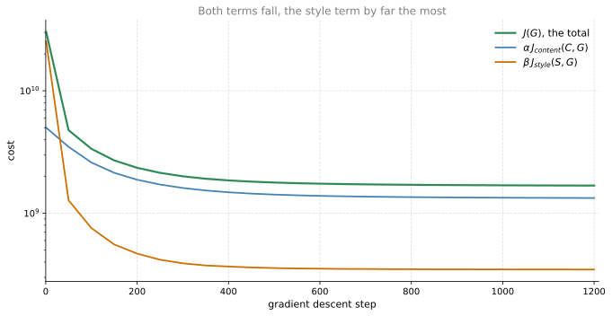
The algorithm is due to Gatys, Ecker, and Bethge (2016), and their paper is not too hard to read if you want the original. It is often cited as 2015, which is the year the preprint appeared under the title A Neural Algorithm of Artistic Style. Both are the same work.
What remains is to say what the two terms actually are.
Review Questions
1. In ordinary training you compute \(\partial J / \partial W\) and update the weights. Here the update is \(G := G - \partial J(G) / \partial G\). What is being updated, and what is being held fixed?
TipAnswer
The pixels of the generated image are being updated, and everything else is held fixed. The ConvNet is pretrained and frozen, the content image is fixed, and the style image is fixed. The only variable in the whole problem is the image \(G\), which starts as random noise. Backpropagation still runs through the network exactly as usual, but the gradient is carried all the way back to the input and applied there.
1. What would happen if \(\beta\) were set to zero?
TipAnswer
Only the content cost would be left, so gradient descent would push the activations of \(G\) at one layer toward the activations of \(C\), and nothing would pull it toward the painting. You would get back something close to the content photograph, with no style transferred at all. Setting \(\alpha\) to zero has the opposite effect, producing a texture in the style of the painting that does not have to resemble the photograph in any way.
1. True or false. Neural style transfer cannot use gradient descent, because nothing here is trainable. It is not a supervised learning task in which a network is fitted to input images \(x\) and output images \(y\).
True
False
TipAnswer
b. The second sentence is right and the first does not follow from it.
It is quite true that this is not supervised learning. There is no training set of paired images, no network being fitted, and nothing that could be handed a fresh photograph afterwards and asked to stylize it in one pass. The ConvNet is pretrained, frozen at the start, and still frozen at the end. Run the algorithm again on a different photograph and it starts over from noise.
But gradient descent does not require trainable weights. It requires a differentiable cost and something to vary, and both exist. The cost is \(J(G)\) and the thing that varies is the generated image itself, so the update is \(G := G - \frac{\partial}{\partial G} J(G)\) applied to pixel values. Backpropagation runs through the frozen network exactly as it always does. The gradient is simply carried all the way back to the input and spent there instead of stopping at the weights.
Content Cost Function
Take the content term first. Suppose you use hidden layer \(l\) to compute the content cost. The first decision is which layer that should be.
If \(l\) is a very small number, say layer one, then the content cost really forces the generated image to have pixel values very similar to the content image, which leaves the style nowhere to go. If instead you use a very deep layer, then it is only asking something like, if there is a dog in the content image, make sure there is a dog somewhere in the generated image, which is a very weak demand.
So in practice \(l\) is chosen somewhere in between, neither too shallow nor too deep in the network.
The network itself is a pretrained ConvNet, maybe a VGG network, or some other network. Nothing about it is trained here.
Now let \(a^{[l](C)}\) and \(a^{[l](G)}\) be the activations of layer \(l\) on the two images. If those two activations are similar, that would seem to imply that both images have similar content. So define the content cost as how different the two activations are.
\[ J_{\text{content}}(C, G) = \frac{1}{2} \left\| a^{[l](C)} - a^{[l](G)} \right\|^2 \]
The notation treats both activations as if they had been unrolled into vectors, so this is the squared \(\ell_2\) norm of the difference between them, which is really just the element-wise sum of squares of differences between the activations in layer \(l\). You could put a normalization constant in front or not, since a constant can be absorbed by the hyperparameter \(\alpha\) anyway.
When gradient descent later works on \(J(G)\) to find an image with low overall cost, this term is what incentivizes it to find a \(G\) whose hidden layer activations are similar to the ones the content image produced.
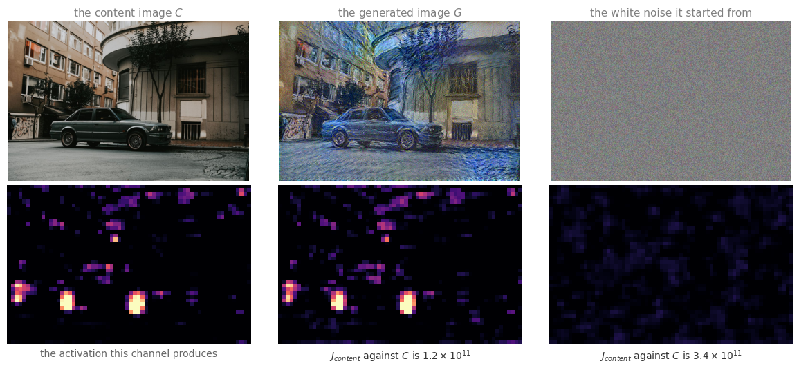
The channel picked out above happens to fire hardest on the two wheels of the car and on the graffiti at the left edge, and more faintly on the windows of the building. On the generated image it fires in the same places and by about the same amount, which is what a low content cost means in practice. On the white noise it starts from, it barely fires at all, and the content cost is nearly three times larger.
Review Questions
1. Why is a very shallow layer a poor choice for the content cost?
TipAnswer
Because the activations of a shallow layer are almost the pixels themselves. A unit in the first layer responds to a small edge or a shade of color in a tiny patch, so forcing those activations to agree forces the generated image to have nearly the same pixel values as the photograph. There would be no room left to repaint anything, which defeats the point.
1. And why is a very deep layer a poor choice?
TipAnswer
Because a deep unit reports that some object is present somewhere, and very little else. Matching those activations asks only that the generated image contain the same kinds of things as the photograph, in roughly the same places, which is far too loose. The result could be a picture of a different car in a different street and still score well. A layer in the middle is specific enough to pin down the scene and loose enough to let the brushwork change.
Style Cost Function
Now for the style term, which needs a definition of what the style of an image even means.
Say you feed an image to the ConvNet and pick some layer \(l\) to define the measure of style. The activation at that layer is a block of numbers, \(n_H^{[l]}\) by \(n_W^{[l]}\) by \(n_C^{[l]}\). Define the style as the correlation between activations across different channels in that block.
Here is what that means. Shade the different channels of the block in different colors, say five of them, although a real network has far more than five. Take the first two channels, the red one and the yellow one, and ask how correlated the activations in those two channels are. At each position there is a number in the first channel and a number in the second channel, which gives a pair of numbers. Look across all \(n_H \times n_W\) positions, and ask how correlated those pairs are.
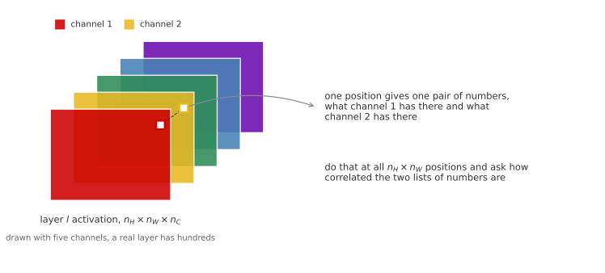
Why Correlation Captures Style
Think back to the patch visualizations. Suppose, for the sake of argument, that the red channel corresponds to a unit looking for a little vertical texture, and the yellow channel corresponds to a unit vaguely looking for orange colored patches.
What does it mean for those two channels to be highly correlated? It means that whatever part of the image has that vertical texture will probably also have that orange tint. And what does it mean for them to be uncorrelated? It means that wherever there is the vertical texture, there probably will not be that orange tint.
So the correlation tells you which of these high level texture components tend to occur, or not occur, together in parts of an image. That is one way of measuring how often different high level features show up and how often they show up together, which is a large part of what people mean by the style of a painting.
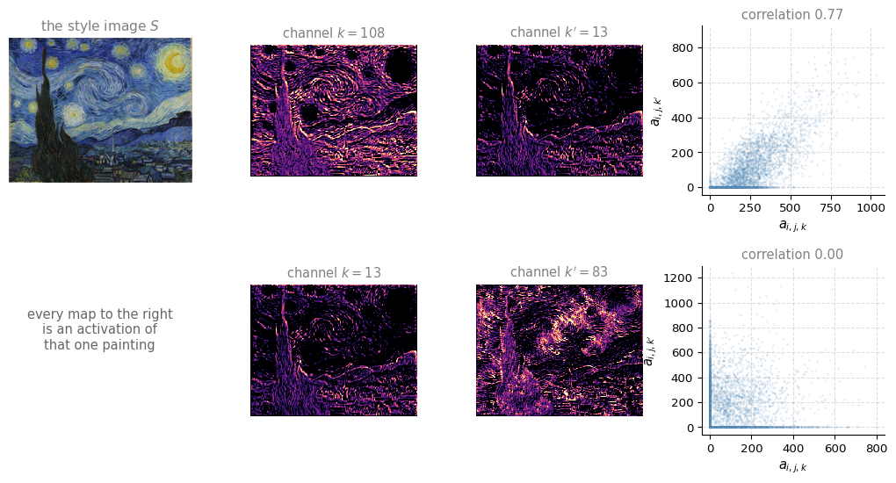
The top pair is two channels that fire in the same places, along the same brush strokes and around the same swirls, and their scatter plot climbs from bottom left to top right. The bottom pair reuses one of those channels and puts it beside a channel it has nothing to do with. Look at the two maps and you can see them avoiding each other, one lit where the other is dark, and the scatter plot collapses onto the two axes, meaning one of them is on almost exactly when the other is off.
Both facts are properties of this painting. A different painting would give a different set of agreements and disagreements between channels, and that is what the style cost is going to compare.
Style Matrix
To turn the intuition into arithmetic, compute something called the style matrix.
Let \(a^{[l]}_{i,j,k}\) denote the activation at position \(i, j, k\) in hidden layer \(l\), where \(i\) indexes into the height, \(j\) indexes into the width, and \(k\) indexes across the different channels.
The style matrix, written \(G^{[l]}\), is \(n_C^{[l]} \times n_C^{[l]}\), so it is a square matrix with one row and one column per channel. Its entry \(G^{[l]}_{kk'}\) measures how correlated the activations in channel \(k\) are with the activations in channel \(k'\), where \(k\) and \(k'\) both range from 1 to \(n_C^{[l]}\).
\[ G^{[l]}_{kk'} = \sum_{i=1}^{n_H^{[l]}} \sum_{j=1}^{n_W^{[l]}} a^{[l]}_{i,j,k} \, a^{[l]}_{i,j,k'} \]
All this does is run over the different positions of the block, over its height and its width, multiply the activations of channels \(k\) and \(k'\) together at each one, and add up the results. Do it for every value of \(k\) and \(k'\) and you have the whole matrix.
Notice that if the two channels tend to be large together, \(G^{[l]}_{kk'}\) comes out large, whereas if they are uncorrelated it comes out small. Technically the word correlation has been doing informal work here, because this is the unnormalized cross covariance, since the means are never subtracted. The elements are simply multiplied together as they are.
NoteTwo different things called G
The letter \(G\) is now doing double duty, as the generated image and as the style matrix. That is unfortunate but standard, and the superscripts keep them apart. In linear algebra a matrix built this way, from all the pairwise products of a set of vectors, is called a Gram matrix, and you will see the style matrix called that in most implementations.
You compute this for both images. Write \(G^{[l](S)}\) for the style matrix of the style image, built from the activations \(a^{[l](S)}\), and \(G^{[l](G)}\) for the style matrix of the generated image, built the same way from \(a^{[l](G)}\).
\[ G^{[l](S)}_{kk'} = \sum_{i=1}^{n_H^{[l]}} \sum_{j=1}^{n_W^{[l]}} a^{[l](S)}_{i,j,k} \, a^{[l](S)}_{i,j,k'} \qquad G^{[l](G)}_{kk'} = \sum_{i=1}^{n_H^{[l]}} \sum_{j=1}^{n_W^{[l]}} a^{[l](G)}_{i,j,k} \, a^{[l](G)}_{i,j,k'} \]
Now you have two matrices, one capturing the style of \(S\) and one capturing the style of \(G\).
Style Cost at One Layer
The style cost at layer \(l\) is the difference between those two matrices, meaning the sum of squares of the element-wise differences between them.
\[ J^{[l]}_{\text{style}}(S, G) = \frac{1}{\left(2 \, n_H^{[l]} n_W^{[l]} n_C^{[l]}\right)^2} \sum_{k} \sum_{k'} \left( G^{[l](S)}_{kk'} - G^{[l](G)}_{kk'} \right)^2 \]
The authors used that normalization constant out front, but it does not matter very much, because the whole thing gets multiplied by the hyperparameter \(\beta\) anyway. What the expression really is, is the Frobenius norm of the difference between the two style matrices, squared.
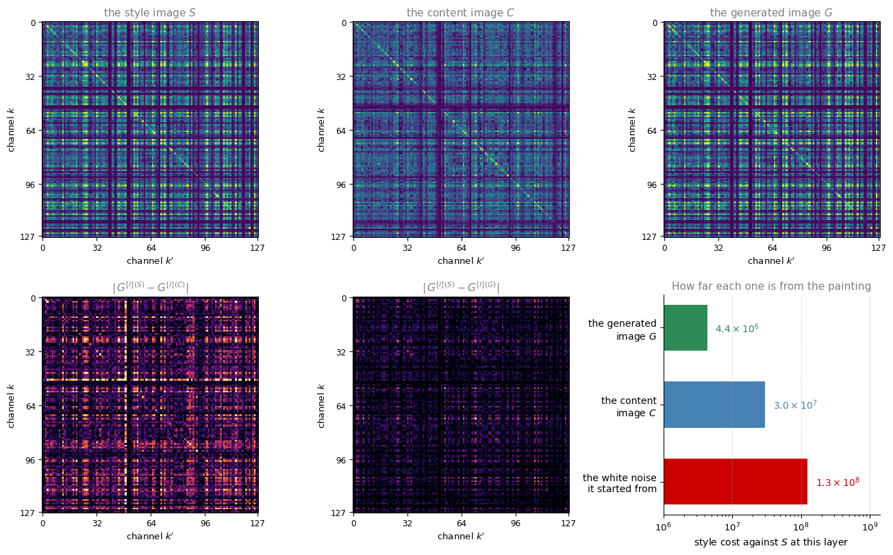
The top row is the same matrix computed on three different images, and the resemblance between the painting and the generated image is the whole method working. The second row subtracts, and the two panels are on the same scale, so the generated image being darker is the style cost being smaller. The generated image was never asked to look like the painting. It was asked to have the same pairwise agreements between channels, and it ended up with a style matrix which is close to a copy.
The bar chart puts numbers on it. The photograph, which is a perfectly ordinary image, sits about seven times further from the painting than the generated image does, and the white noise it started from sits about thirty times further.
Several Layers at Once
It turns out you get more visually pleasing results if you use the style cost from several different layers rather than only one. So the overall style cost is a sum over layers, weighted by an extra set of hyperparameters \(\lambda^{[l]}\).
\[ J_{\text{style}}(S, G) = \sum_{l} \lambda^{[l]} \, J^{[l]}_{\text{style}}(S, G) \]
This lets the network use the early layers, which measure relatively simple low level features such as edges, as well as the later layers, which measure high level features. The generated image then has to match the style image on low level and high level correlations at the same time. The generated images on these pages used five layers, one from each block of VGG-19, weighted equally.
And that closes the loop. The overall cost is
\[ J(G) = \alpha \, J_{\text{content}}(C, G) + \beta \, J_{\text{style}}(S, G) \]
and you run gradient descent, or a more sophisticated optimization algorithm, to find an image \(G\) that minimizes it. Do that and you can generate some pretty nice novel artwork.
Review Questions
1. The style matrix is \(n_C \times n_C\) and has nothing in it about where anything is. Why is throwing away all the position information the right move for style?
TipAnswer
Because style is not about where things are. Summing over every position asks which features tend to appear together anywhere in the image, and the answer is the same whether the swirls are in the top left or the bottom right. Keeping the positions would make the style cost demand that the generated image put a brush stroke exactly where the painting has one, which would be a demand about content and would fight the content cost rather than complement it.
1. Why does the style matrix have to be compared against the style matrix of \(G\) rather than against the activations of \(G\) directly?
TipAnswer
Comparing activations directly is exactly what the content cost does, and it would ask the generated image to reproduce the painting itself. The style matrix is a summary that discards position and keeps only how channels co-occur, so two very different pictures can have nearly the same style matrix. That is what makes it possible to satisfy the style term with the content of a completely different photograph.
1. What is \(\lambda^{[l]}\) for, and what would be lost by using a single layer instead?
TipAnswer
\(\lambda^{[l]}\) weights how much each layer contributes to the total style cost, so it decides the balance between low level style and high level style. Using one layer alone means matching the correlations at one scale only. A shallow layer alone tends to reproduce the palette and small strokes without the larger organization, and a deep layer alone tends to reproduce the larger motifs without the fine texture. Several layers together give the more pleasing result.
1. True or false. In the deeper layers of a ConvNet each channel corresponds to a different feature detector, and the style matrix \(G^{[l]}\) measures the degree to which the activations of different feature detectors in layer \(l\) vary together.
True
False
TipAnswer
a. That is what the entry \(G^{[l]}_{kk'} = \sum_{i}\sum_{j} a^{[l]}_{i,j,k} \, a^{[l]}_{i,j,k'}\) measures. It is large when channels \(k\) and \(k'\) tend to be active at the same positions and small when they are not, so the matrix is a table of how every pair of detectors co-occurs across the image. The diagonal entry \(G^{[l]}_{kk}\) is the same sum with \(k' = k\), which says how strongly detector \(k\) fires on its own.
Two small caveats do not change the answer. The word correlation is being used loosely, since the means are never subtracted, so this is an unnormalized cross covariance rather than a statistical correlation. And “each channel corresponds to a feature detector” is a statement about the deeper layers; in layer 1 a channel is an edge at some orientation, which is a detector too but not one you would name after a thing in the world.
1D and 3D Generalizations
You have learned a lot about ConvNets by now, everything from the architecture of a ConvNet to how to use it for image recognition, object detection, face recognition, and neural style transfer. Almost all of that discussion has been about images, which are two dimensional grids of pixels, because images are so pervasive.
The convolution operation does not actually care about that. Many of the ideas in this course apply just as well to 1D data, such as a signal recorded over time, and to 3D data, such as a scan of a solid object.
Two Dimensional Case
Start from where the first week left off. A 14 by 14 image convolved with a 5 by 5 filter gives a 10 by 10 output, because a filter of size 5 fits into a row of 14 pixels in exactly 10 positions.
If the input has multiple channels, say 14 by 14 by 3, then the filter has to match that third number, so it becomes 5 by 5 by 3. At each position the filter now covers a small block of the input, all three channels of it, and produces a single number. The output is still 10 by 10.
And if you use multiple filters, say 16 of them, each one produces its own 10 by 10 sheet of numbers, and stacking those gives an output of 10 by 10 by 16.
That is the whole pattern, and it is worth naming the three moving parts before generalizing it. The spatial size shrinks from 14 to 10 because of the filter size. The channel count of the filter always matches the channel count of its input. The number of filters becomes the channel count of the output.
One Dimensional Data
Now take away one of the spatial dimensions.
The top panel below is an electrocardiogram, usually shortened to EKG or ECG. If you place an electrode over your chest, it measures the small voltages that vary across your chest as your heart beats, because the little electric waves generated by a beating heart can be picked up by a pair of electrodes. Each of the tall peaks corresponds to one heartbeat.
If you want to use EKG signals to make medical diagnoses, then you have 1D data, because an EKG recording is a time series giving the voltage at each instant in time.
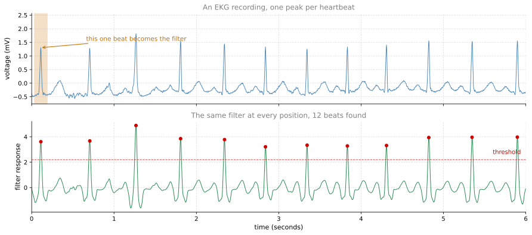
The lower panel is the point of the whole idea. One filter, holding the shape of a single beat, was slid along the recording and multiplied against the signal at each position. It responds weakly almost everywhere and strongly at every heartbeat, including beats it was never cut from, and including beats that arrive at irregular intervals. The same feature detector works at every position.
Rather than a 14 by 14 input, suppose you have a 14 dimensional input, meaning 14 numbers in a row. Then you want to convolve it with a one dimensional filter, so rather than 5 by 5 you just have a 5 dimensional filter.
With 2D data, a convolution let you take the same 5 by 5 feature detector and apply it at different positions throughout the image, which is how you ended up with the 10 by 10 output. A 1D filter lets you take your 5 dimensional filter and apply it at lots of different positions throughout the signal in the same way. A 14 dimensional input convolved with a 5 dimensional filter gives a 10 dimensional output.
Channels work the same way as well. With one lead, meaning one electrode, the input has a single channel, so the filter is 5 by 1. With 16 filters you end up with 10 by 16, and that could be one layer of your ConvNet.
For the next layer, feed in that 10 by 16 input and convolve it with a 5 dimensional filter again. That filter now needs 16 channels to match its input, so it is 5 by 16. With 32 filters, the output of that second layer is 6 by 32.
The analogy with 2D data is exact. There you took a 10 by 10 by 16 volume and convolved it with a 5 by 5 by 16 filter, whose 16 has to match, and with 32 filters you got a 6 by 6 by 32 output.
All of these ideas apply to 1D data, where the same feature detector can be applied at a variety of positions, for example to detect the different heartbeats in an EKG signal. Using the same set of features to find beats at different positions along a time series is exactly what made convolution useful for images in the first place.
In practice, for a lot of 1D data you would reach for a recurrent neural network instead, which is the subject of the next course. Some people do try ConvNets on these problems. The next course on sequence models covers recurrent neural networks, LSTMs, and other models of that kind, and it discusses the pros and cons of 1D ConvNets versus models that were explicitly designed for sequence data.
Review Questions
1. A 14 dimensional input convolved with a 5 dimensional filter gives a 10 dimensional output. Where does the 10 come from?
TipAnswer
From the same arithmetic as images, with one dimension instead of two. A filter of length 5 fits into a row of 14 numbers in \(14 - 5 + 1 = 10\) positions when it moves one step at a time and no padding is used. It is the \(n - f + 1\) rule from the very first week, applied along a single axis.
1. In the second 1D layer the filter is 5 by 16 rather than 5. Why?
TipAnswer
Because the input to that layer is 10 by 16, and the channel count of a filter always has to match the channel count of its input. The 16 comes from the 16 filters in the first layer, each of which contributed one channel to the first layer output. The filter still spans 5 positions along the signal. It just has to reach across all 16 channels at each of them.
1. The filter in the figure was cut out of the first beat, and yet it responded to all of the later beats too. Which property of convolution is that?
TipAnswer
Parameter sharing. The same small set of numbers is applied at every position along the signal, so a detector that fires on the shape of a beat fires wherever that shape occurs. Nothing about the filter encodes where in the recording a beat is meant to be, which is why irregular intervals between beats cost it nothing.
Three Dimensional Data
What is three dimensional data? Instead of a 1D list of numbers or a 2D matrix of numbers, you now have a 3D block, meaning a three dimensional input volume of numbers.
A CT scan is the standard example. It is a type of X-ray scan that gives a three dimensional model of your body by taking many different slices through it. As you move through a CT scan you see different slices of the torso, one after another, so the data is fundamentally three dimensional. One way to think of it is that the data now has some height, some width, and also some depth, where the depth axis runs through the different slices.
Just as an image does not have to be square, a 3D volume does not have to be a perfect cube. The height, width, and depth of a scan can all be different. The numbers below use 14 by 14 by 14 only to keep the arithmetic simple.
To apply a ConvNet to detect features in a three dimensional scan, generalize the same three moving parts. Convolve a 14 by 14 by 14 volume with a 5 by 5 by 5 filter, so the filters are now three dimensional too, and you get a 10 by 10 by 10 volume out. Technically that filter is 5 by 5 by 5 by 1, because the number of channels of the filter still has to match the number of channels of the input, which here is 1. With 16 filters, the output is 10 by 10 by 10 by 16, and that is one layer of a ConvNet over 3D data.
Convolve that again with a 5 by 5 by 5 by 16 filter, where the 16 matches as usual, and with 32 filters you end up with a 6 by 6 by 6 volume across 32 channels.
What these filters do is detect features across your 3D data. Medical scans are one example of 3D volumes. Another is movie data, where the different slices are different slices in time through a movie, and a 3D ConvNet over that could be used to detect motion or to detect people taking actions.
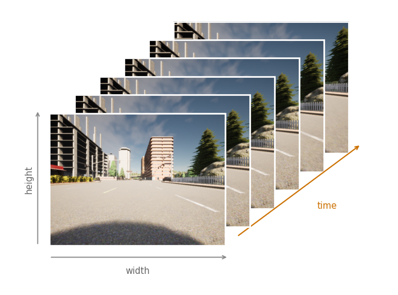
Put the three cases beside one another and the pattern is one rule with a dimension added or taken away.
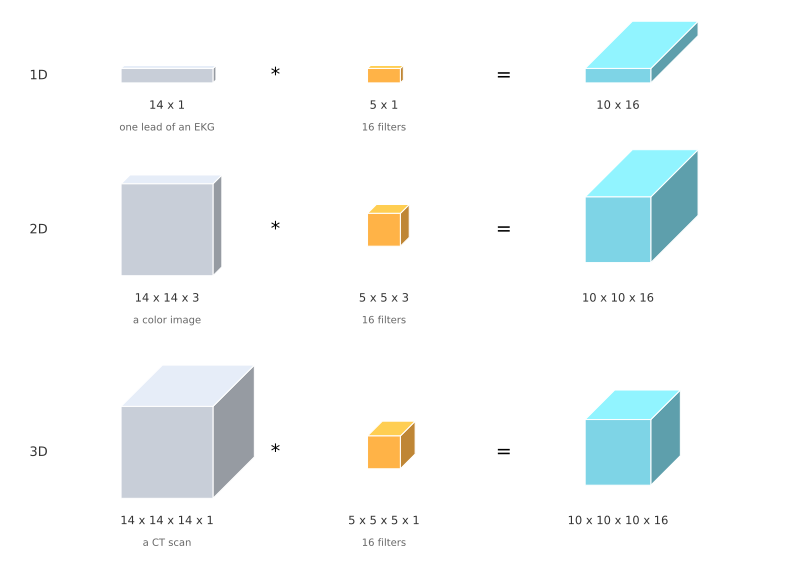
Review Questions
1. A 14 by 14 by 14 volume convolved with sixteen 5 by 5 by 5 by 1 filters gives 10 by 10 by 10 by 16. Where does each of those four numbers come from?
TipAnswer
The three tens are \(14 - 5 + 1\) along the height, the width, and the depth, since the filter slides along all three axes now instead of two. The 16 is the number of filters, because each filter contributes one channel to the output, exactly as it does for images. The 1 in the filter shape is the channel count of the input, which has to match and is 1 for a single scan.
1. A CT scan has a depth axis and a color image has three channels. Both are a third number after the height and the width. What makes them different?
TipAnswer
The filter slides along the depth of a scan and does not slide along channels. A 5 by 5 by 5 filter visits many different positions down the depth of the volume, so depth is a spatial axis like height and width. A filter always spans every channel at once, which is why its channel count has to match its input exactly and why there is no such thing as sliding partway across the channels. That is also why the shape of a 3D layer carries four numbers, three spatial and one for channels.
1. Movie frames stacked along a third axis look like a CT scan to a 3D filter. What does that let the filter detect that a 2D filter run on each frame separately cannot?
TipAnswer
Anything that only exists across time. A 2D filter sees one frame, so the most it can report is what is present in that frame. A 3D filter covers several frames at once, so it can respond to change between them, meaning motion, direction of motion, and the shape of an action as it unfolds. The third axis being time rather than depth changes nothing about the arithmetic.
1. You are working with 3D data. The input volume has size \(32 \times 32 \times 32 \times 3\), and you apply a convolutional layer of 16 filters of size \(4 \times 4 \times 4\), with no padding and a stride of 1. What is the size of the output volume?
\(29 \times 29 \times 29 \times 13\)
\(29 \times 29 \times 29 \times 16\)
\(29 \times 29 \times 29 \times 3\)
\(31 \times 31 \times 31 \times 16\)
TipAnswer
b. Apply
\[ \left\lfloor \frac{n^{[l-1]} - f + 2p}{s} \right\rfloor + 1 = n^{[l]} \]
to each of the three spatial axes. With \(n = 32\), \(f = 4\), \(p = 0\) and \(s = 1\) that is \(32 - 4 + 1 = 29\), and the same along all three, giving \(29 \times 29 \times 29\). The last number is the count of filters, 16, because each filter contributes one channel to the output.
The wrong answers are each a specific slip. d subtracts one position instead of three, which is what you get by forgetting that a filter of width 4 has its last valid position 3 steps short of the end. c carries the input’s 3 channels through to the output, but the 3 is consumed by the convolution rather than preserved: each filter silently spans every input channel, so the filters are really \(4 \times 4 \times 4 \times 3\) and each one collapses all 3 channels into a single number at every position. a is \(16 - 3\), which corresponds to nothing at all.
Where This Leaves Things
Neural style transfer is a strange member of this course, since it trains nothing. The ConvNet is borrowed, already trained on a completely different task, and used purely as a measuring instrument. What it measures is what its layers respond to, and both halves of the cost function are just different ways of reading those responses. The content cost reads them position by position, and the style cost reads only which of them fire together.
The generalizations at the end are worth knowing for a related reason. Nothing in the convolution operation was ever specific to pictures. A filter is a small pattern, it is applied at every position of the input, its channel count matches whatever it is applied to, and the number of filters becomes the channel count of the output. Take a dimension away and you get EKG signals. Add one and you get scans and movies. Image data is so pervasive that the vast majority of ConvNets still run on 2D data, but nothing forces that.
This is the end of the course on ConvNets. The next course is on sequence models, where the 1D case gets treated properly.
References
The generated images were produced with the algorithm of the first reference below, running on VGG-19 features. The photograph is credited in media/deep-learning/object-detection/README.txt and both paintings are public domain. The EKG excerpt is record 208 of the MIT-BIH Arrhythmia Database, taken from the copy that ships with SciPy, and the street frames are from the CARLA simulator dataset used earlier in Semantic Segmentation with U-Net.
- Gatys, L. A., Ecker, A. S., & Bethge, M. (2015). A neural algorithm of artistic style. arXiv. https://doi.org/10.48550/arXiv.1508.06576
- Gatys, L. A., Ecker, A. S., & Bethge, M. (2016). Image style transfer using convolutional neural networks. In 2016 IEEE Conference on Computer Vision and Pattern Recognition (CVPR) (pp. 2414-2423). IEEE. https://doi.org/10.1109/CVPR.2016.265
- Goldberger, A. L., Amaral, L. A. N., Glass, L., Hausdorff, J. M., Ivanov, P. Ch., Mark, R. G., et al. (2000). PhysioBank, PhysioToolkit, and PhysioNet: Components of a new research resource for complex physiologic signals. Circulation, 101(23), e215-e220. https://doi.org/10.1161/01.CIR.101.23.e215
- Moody, G. B., & Mark, R. G. (2001). The impact of the MIT-BIH Arrhythmia Database. IEEE Engineering in Medicine and Biology Magazine, 20(3), 45-50. https://doi.org/10.1109/51.932724
- Simonyan, K., & Zisserman, A. (2014). Very deep convolutional networks for large-scale image recognition. arXiv. https://doi.org/10.48550/arXiv.1409.1556
- Zeiler, M. D., & Fergus, R. (2014). Visualizing and understanding convolutional networks. In Computer Vision - ECCV 2014 (pp. 818-833). Springer. https://doi.org/10.1007/978-3-319-10590-1_53